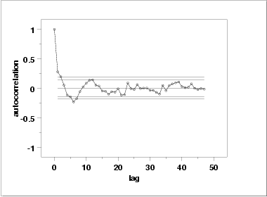

|
1.
Exploratory Data Analysis
1.4. EDA Case Studies 1.4.2. Case Studies 1.4.2.8. Heat Flow Meter 1
|
|||
| Summary Statistics |
As a first step in the analysis, common summary statistics are
computed from the data.
Sample size = 195
Mean = 9.261460
Median = 9.261952
Minimum = 9.196848
Maximum = 9.327973
Range = 0.131126
Stan. Dev. = 0.022789
|
||
| Location |
One way to quantify a change in location over time is to
fit a straight line
to the data using an index variable as the independent
variable in the regression. For our data, we assume
that data are in sequential run order and that the
data were collected at equally spaced time intervals. In our regression,
we use the index variable X = 1, 2, ..., N, where N is the number
of observations. If there is no significant drift in the location
over time, the slope parameter should be zero.
Coefficient Estimate Stan. Error t-Value
B0 9.26699 0.3253E-02 2849.
B1 -0.56412E-04 0.2878E-04 -1.960
Residual Standard Deviation = 0.2262372E-01
Residual Degrees of Freedom = 193
The slope parameter, B1, has a
t value of -1.96
which is (barely) statistically significant since it is essentially
equal to the 95 % level cutoff of -1.96. However, notice that the
value of the slope parameter estimate is -0.00056. This slope, even
though statistically significant, can essentially be considered zero.
|
||
| Variation |
One simple way to detect a change in variation is with a
Bartlett test
after dividing the data set into several equal-sized intervals.
The choice of the number of intervals is somewhat arbitrary, although
values of four or eight are reasonable.
We will divide our data into four intervals.
H0: σ12 = σ22 = σ32 = σ42
Ha: At least one σi2 is not equal to the others.
Test statistic: T = 3.147
Degrees of freedom: k - 1 = 3
Significance level: α = 0.05
Critical value: Χ 21-α,k-1 = 7.815
Critical region: Reject H0 if T > 7.815
In this case, since the Bartlett test statistic of 3.147 is less than
the critical value at the 5 % significance level of 7.815, we conclude
that the variances are not significantly different in the
four intervals. That is, the assumption of constant scale is valid.
|
||
| Randomness |
There are many ways in which data can be non-random. However,
most common forms of non-randomness can be detected with a
few simple tests. The lag plot in the previous section is a
simple graphical technique.
Another check is an autocorrelation plot that shows the autocorrelations for various lags. Confidence bands can be plotted at the 95 % and 99 % confidence levels. Points outside this band indicate statistically significant values (lag 0 is always 1).  The lag 1 autocorrelation, which is generally the one of greatest interest, is 0.281. The critical values at the 5 % significance level are -0.087 and 0.087. This indicates that the lag 1 autocorrelation is statistically significant, so there is evidence of non-randomness. A common test for randomness is the runs test.
H0: the sequence was produced in a random manner
Ha: the sequence was not produced in a random manner
Test statistic: Z = -3.2306
Significance level: α = 0.05
Critical value: Z1-α/2 = 1.96
Critical region: Reject H0 if |Z| > 1.96
The value of the test statistic is less than -1.96, so we reject the
null hypothesis at the 0.05 significant level and conclude that the
data are not random.
Although the autocorrelation plot and the runs test indicate some mild non-randomness, the violation of the randomness assumption is not serious enough to warrant developing a more sophisticated model. It is common in practice that some of the assumptions are mildly violated and it is a judgement call as to whether or not the violations are serious enough to warrant developing a more sophisticated model for the data. |
||
| Distributional Analysis |
Probability plots
are a graphical test for assessing if a
particular distribution provides an adequate fit to a data set.
A quantitative enhancement to the probability plot is the correlation coefficient of the points on the probability plot. For this data set the correlation coefficient is 0.996. Since this is greater than the critical value of 0.987 (this is a tabulated value), the normality assumption is not rejected. Chi-square and Kolmogorov-Smirnov goodness-of-fit tests are alternative methods for assessing distributional adequacy. The Wilk-Shapiro and Anderson-Darling tests can be used to test for normality. The results of the Anderson-Darling test follow.
H0: the data are normally distributed
Ha: the data are not normally distributed
Adjusted test statistic: A 2 = 0.129
Significance level: α = 0.05
Critical value: 0.787
Critical region: Reject H0 if A 2 > 0.787
The Anderson-Darling test also does not reject the normality
assumption because the test statistic, 0.129, is less than the
critical value at the 5 % significance level of 0.787.
|
||
| Outlier Analysis |
A test for outliers is the
Grubbs' test.
H0: there are no outliers in the data
Ha: the maximum value is an outlier
Test statistic: G = 2.918673
Significance level: α = 0.05
Critical value for an upper one-tailed test: 3.597898
Critical region: Reject H0 if G > 3.597898
For this data set, Grubbs' test does not detect any outliers at
the 0.05 significance level.
|
||
| Model |
Since the underlying assumptions were validated both graphically
and analytically, with a mild violation of the randomness
assumption, we conclude that a reasonable model for the data is:
|
||
| Univariate Report |
It is sometimes useful and convenient to summarize the above
results in a report. The report for the heat flow meter data follows.
Analysis for heat flow meter data
1: Sample Size = 195
2: Location
Mean = 9.26146
Standard Deviation of Mean = 0.001632
95 % Confidence Interval for Mean = (9.258242,9.264679)
Drift with respect to location? = NO
3: Variation
Standard Deviation = 0.022789
95 % Confidence Interval for SD = (0.02073,0.025307)
Drift with respect to variation?
(based on Bartlett's test on quarters
of the data) = NO
4: Randomness
Autocorrelation = 0.280579
Data are Random?
(as measured by autocorrelation) = NO
5: Data are Normal?
(as tested by Anderson-Darling) = YES
(as tested by Normal PPCC) = YES
6: Statistical Control
(i.e., no drift in location or scale,
data are random, distribution is
fixed, here we are testing only for
fixed normal)
Data Set is in Statistical Control? = YES
7: Outliers?
(as determined by Grubbs' test) = NO
|
||